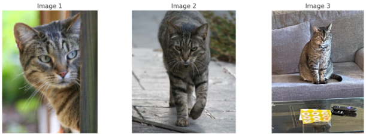

If I give you three separate pictures of cats, can you tell me which two pictures are photos of the same cat?
Yes, I can help with that. Please upload the three pictures of the cats, and I'll analyze them to determine which two are photos of the same cat.


Here they are
Thank you for providing the images. I will analyze features such as fur patterns, eye shape, and any distinctive marks to determine which two pictures are of the same cat. Let's take a look at each image and compare them.

After examining the images, here are my observations:
- Image 1 and Image 2 both feature cats with very similar tabby markings, notably the distinctive "M" shape on their foreheads. The facial structures appear quite similar, and the fur pattern on the body (what is visible of it) seems to match. The eyes are also a similar shade of blue, which is a less common eye color for cats and could be a distinguishing feature.
- Image 3, on the other hand, shows a cat with a slightly different fur pattern, especially on the legs and chest. The cat also has a different collar, which suggests it might not be the same individual, assuming the collar has not been changed between photos. It's important to note, though, that the fur pattern is still that of a tabby, and tabby patterns can vary significantly even within the same individual based on the angle and part of the body shown. Additionally, the cat in Image 3 has a more robust and rounded face than the cats in Image 1 and Image 2, which seem to have a more angular facial structure.
Well done! and Thank you
You're welcome! I'm glad I could assist you. If you have any more questions or need further assistance, feel free to ask. Enjoy your time with your cats!